Season Analysis
Explore the Season Analysis page for written content on the 2023/24 season of the Vancouver Canucks. This page will provide detailed monthly recaps, key moments, highlight reels, and more!
Canucks 2023/24 season by the month
October: 6-2-1(Home:3-0-1)(Away:3-2-0)
November: 9-6-0(Home:5-2-0)(Away:4-4-0)
December: 8-2-2(Home:5-2-0)(Away:3-0-2)
January: 10-1-2(Home:5-0-1)(Away:5-1-1)
Febuary: 5-6-2(Home:2-2-1)(Away:3-4-1)
March: 8-3-1(Home:5-3-1)(Away:3-0-0)
April: 4-3-1(Home:2-0-1)(Away:2-3-0)
October
Explore the Season Analysis page for written content on the 2023/24 season of the Vancouver Canucks. This page will provide detailed monthly recaps, key moments, highlight reels, and more!
Canucks 2023/24 season by the month
October: 6-2-1(Home:3-0-1)(Away:3-2-0)
November: 9-6-0(Home:5-2-0)(Away:4-4-0)
December: 8-2-2(Home:5-2-0)(Away:3-0-2)
January: 10-1-2(Home:5-0-1)(Away:5-1-1)
Febuary: 5-6-2(Home:2-2-1)(Away:3-4-1)
March: 8-3-1(Home:5-3-1)(Away:3-0-0)
April: 4-3-1(Home:2-0-1)(Away:2-3-0)
October
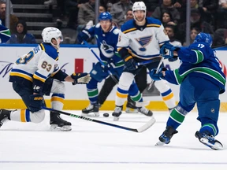
The Vancouver Canucks kicked off their 2023/24 season with a flurry of wins. Under the leadership of head coach Rick Tocchet, the Canucks established a very strong start, with many players having standout performances.
Record: 6-2-1
The Canucks finished October with 13 points, good enough for 2nd place in the Pacific Division, 2nd place in the Western Conference, and 4th in the league.
Key Games
October 11 vs. Edmonton Oilers (Won 8-1)
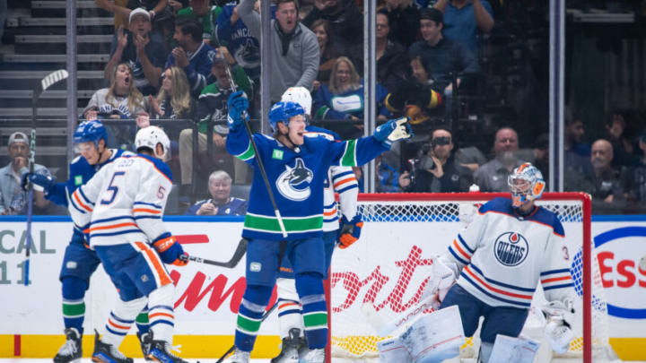
The Vancouver Canucks started their season with a blowout 8-1 win against the Edmonton Oilers. Brock Boeser had a standout performance, scoring 4 goals, and three more Canucks players got more than 3 points(J.T. Miller, Elias Pettersson, Quinn Hughes). Thatcher Demko had a .955 save percentage before being replaced for Casey DeSmith due to sickness.
Oct 28 vs. New York Rangers (Lost 4-3 in O.T)
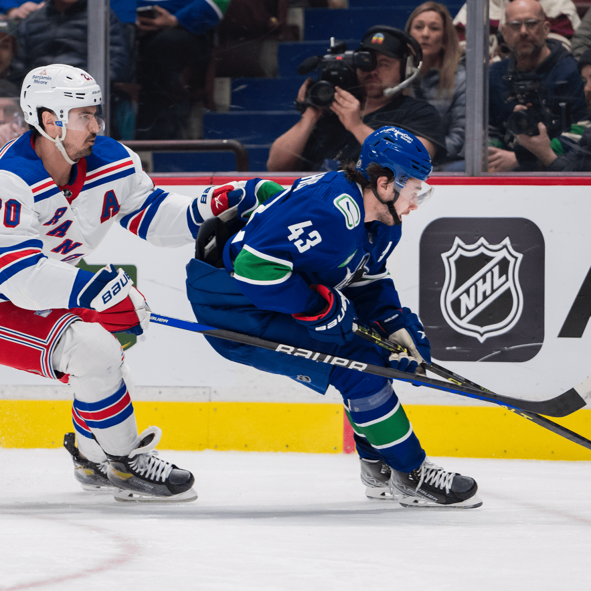
The Vancouver Canucks faced off against a top team in the New York Rangers, with both teams showing strong defensive play and offensive opportunities. Defenseman Filip Hronek recorded two assists, and Canucks backup goalie Casey DeSmith made 20 saves on 24 shots to record a .833 save percentage.
November
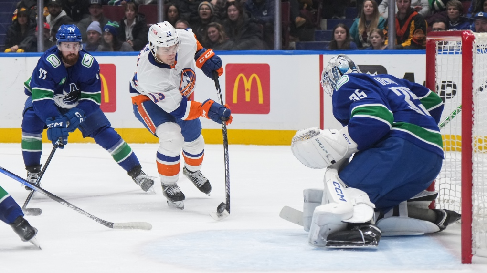
The Canucks continued building on their success in the month of November, recording blowout wins, but also suffering some hard losses
Record: 9-6-0
The Canucks finished November with 18 points, good enough for 2nd in the Pacific, 3rd in the Western Conference, and 5th in the league
Key Games
November 2 vs. San Jose Sharks (Won 10-1)

The Vancouver Canucks dominated this match from start to finish, using their efficient power play to their advantage. Quinn Hughes recorded 1 goal and 4 assists, Brock Boeser recorded 2 goals and 1 assist, and J.T. Miller and Elias Pettersson recorder 3 points each with Anthony Beauvillier also scoring 2 goals.
November 6 vs. Edmonton Oilers (Won 6-2)
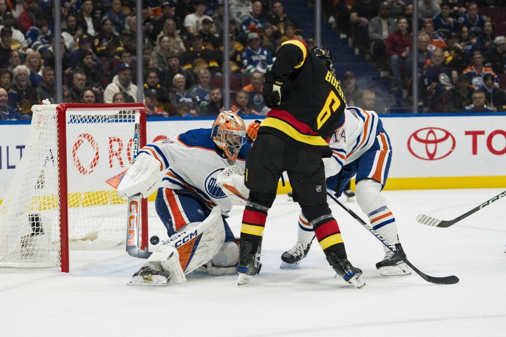
The Vancouver Canucks defeated the Edmonton Oilers once again, improving their record to 3-0-0 against their Pacific Division rivals. Quinn Hughes recorded 4 points, with Brock Boeser, Filip Hronek, and J.T. Miller recording 2 points each
December
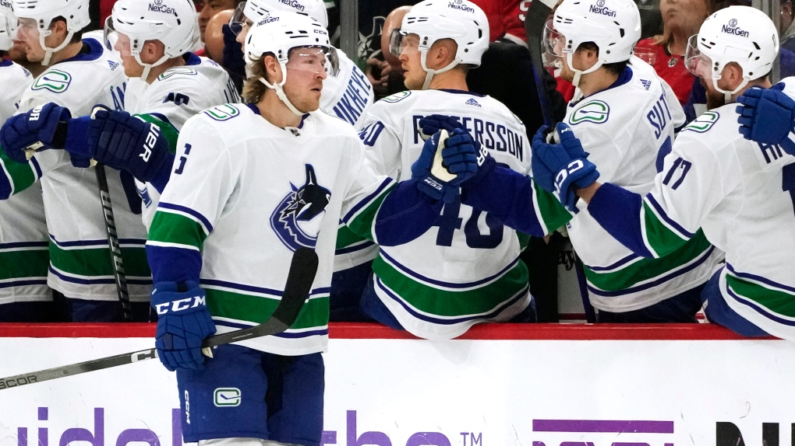
December was a very successful month for the Canucks, showing strength in both defence and offence. The success was strenghtened by victories over top teams like the Carolina Hurricanes and the Florida Panthers. Overall, December was a month of many victories to build on to heading into 2024.
Record: 8-2-2
The Canucks finished December with 18 points, good enough for 1st in the Pacific, 1st in the Conference, and 3rd in the league
Key Games
December 5 vs. New Jersey Devils (Lost 6-5)
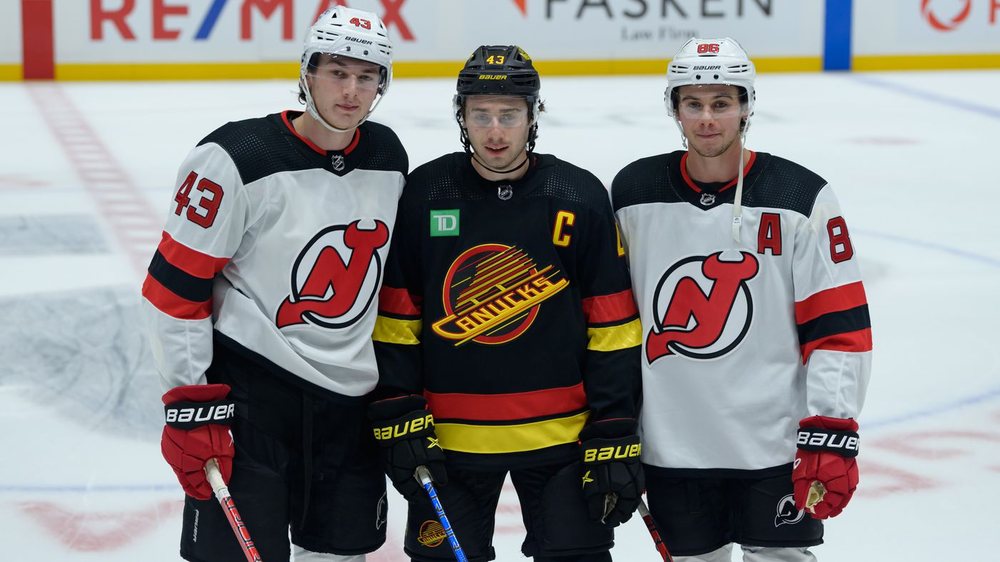
This game marked on of the few losses the Canucks had in the month of December, and also the faceoff of the Hughes brothers, as Quinn Hughes recorded two assists, with his younger brothers Jack and Luke recording three points and one point respectively. The Canucks showed resilience, coming back from a three goal deficit, but were unfortunatly not able to tie it up at the end.
December 14 vs. Florida Panthers (Won 4-0)
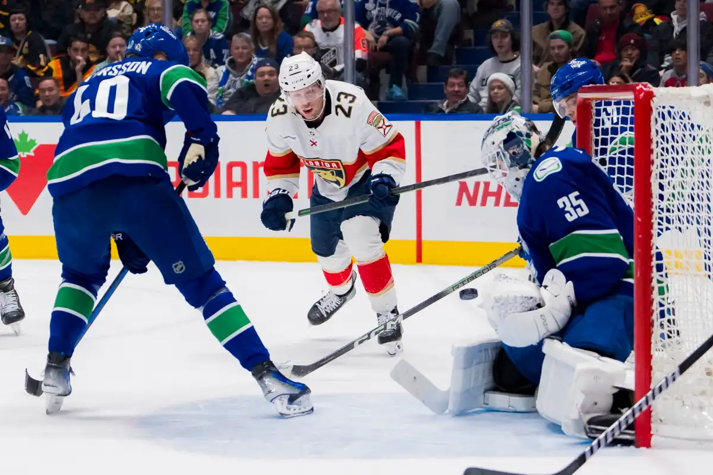
The Canucks' win over the Florida Panthers showed their versatility, as some of the big names weren't getting on the scoresheet. Dakota Joshua had himself a two-goal night, with Conor Garland and Teddy Blueger both registering an assist each. Thatcher Demko had yet another standout performance, saving all 36 shots he faced to get himself another shutout.
January
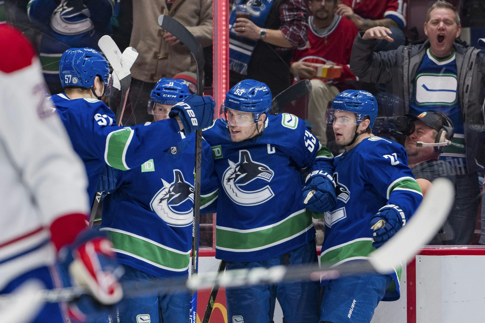
January was a month building onto December's success, only having one regulation loss all month, as well as continuing their hot streak by beating mighty teams like the New York Rangers and the Toronto Maple leafs.
Record: 10-1-2
The Canucks finished January with 22 points, good enough for 1st in the Pacific, 1st in the Conference, and 1st in the league!!
Key Games
January 8 vs. New York Rangers (Won 6-3)
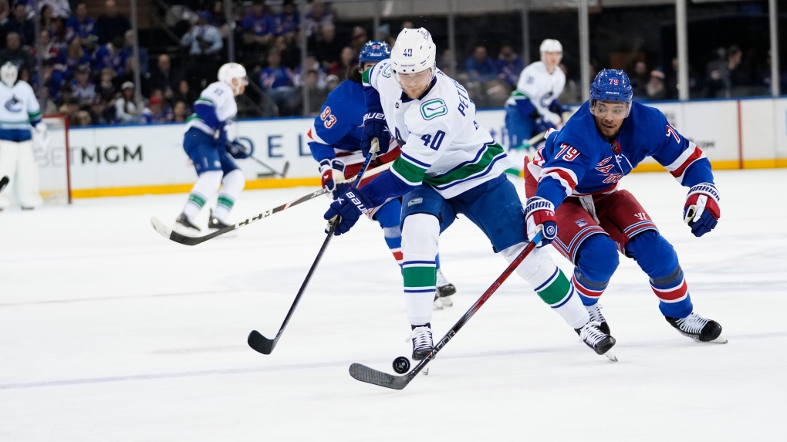
The Canucks continued their hot streak by putting six goals past the New York Rangers at Madison Square Garden. Swedish stars Elias Pettersson and Nils Hoglander had two goals each, and Brock Boeser recorded 3 points with a goal and two assists. Thatcher Demko continued his consistant performance by making 39 saves on 42 shots for a .928 save percentage.
January 20 vs. Toronto Maple Leafs (Won 6-4)
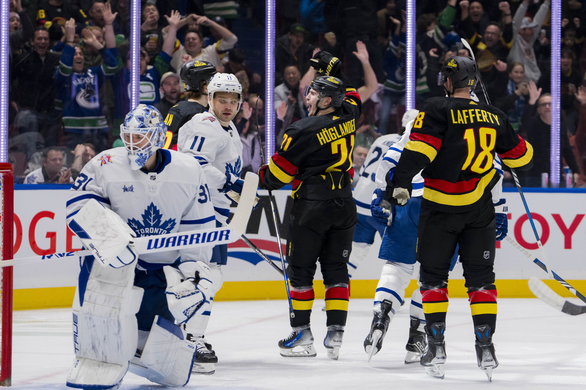
This game was a rollercoaster, with the Canucks taking a 3-0 lead in the first period, but Toronto quickly answered with three goals back to back in the 2nd to tie the game. Both teams exchanged goals, and a pair of power play goals from J.T. Miller and Elias Pettersson closed out the game against a strong Toronto side.
January 27 vs. Columbus Blue Jackets (Won 5-4)
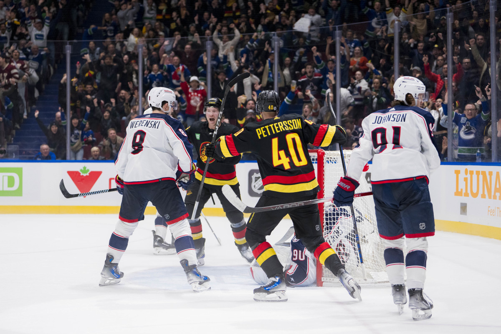
The Canucks weren't expecting to be down 4-1 after the 2nd period, but they were. They struggled early in the game against a mediocre side, but they made a comeback with three power play goals in a row, with two goals from Brock Boeser and one from Elias Pettersson, sending the game into overtime. Elias Pettersson scored the overtime winner to extend the Canucks' point streak to 11 games.
Febuary
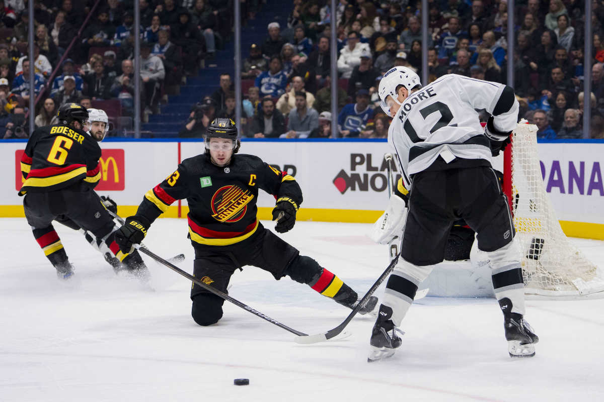
Febuary was a more difficult month for the Canucks as they faced challenging road trips and Conference rivals. Despite the setbacks, the Canucks were able to grab some strong results and gain crucial points
Record: 5-6-2
The Canucks finished Febuary with 12 points, good enough for 1st in the Pacific, 1st in the Conference, and 4th in the league.
Key Games
Febuary 8 vs. Boston Bruins (Lost 4-0)
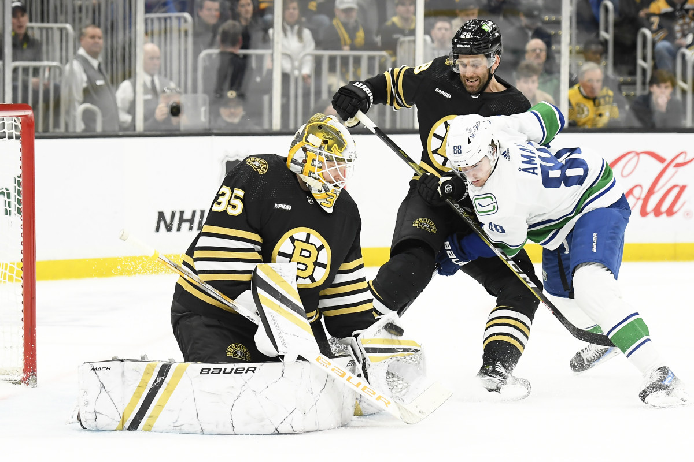
The Canucks performed poorly against a strong cup-contending Boston side as they were shut out by Boston due to the lack of defensive awareness, with Boston scoring two goals shorthanded.
Febuary 19 vs. Minnesota Wild (Lost 10-7)
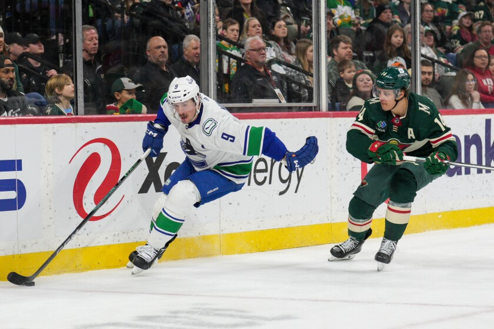
The Canucks played a 17 goal thriller against a very average Minnesota Wild, where despite a J.T. Miller hattrick, the Wild scored two empty-netters to close the game out.
March
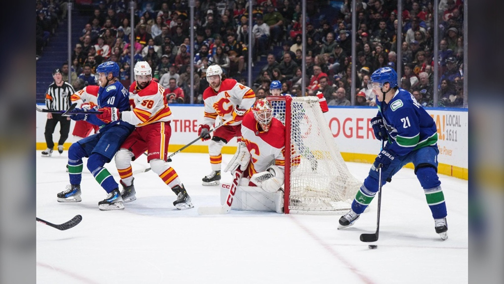
March was a crucial month for the Canucks as they continued to push towards top spot in the standings heading into April. The team improved their consistancy by beating most of the weaker teams and putting up a strong fight against the tougher opponents.
Record: 8-3-1
The Canucks finished March with 17 points, good enough for 1st in the Pacific, 2nd in the Conference, and 5th in the league.
Key Games
March 9 vs. Winnipeg Jets (Won 5-0)
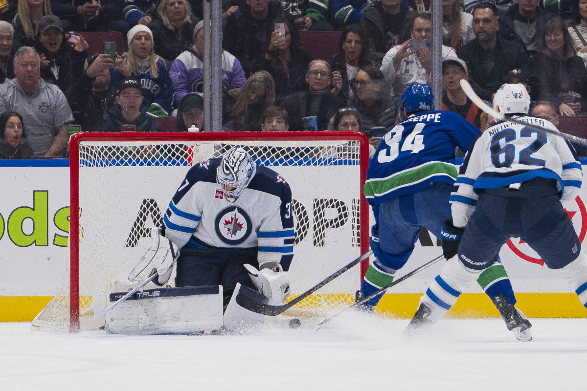
The Canucks brought out their A-game against a strong Winnipeg side, with both Canucks goalies getting shutouts as starting goalie Thatcher Demko was pulled due to injury.
April
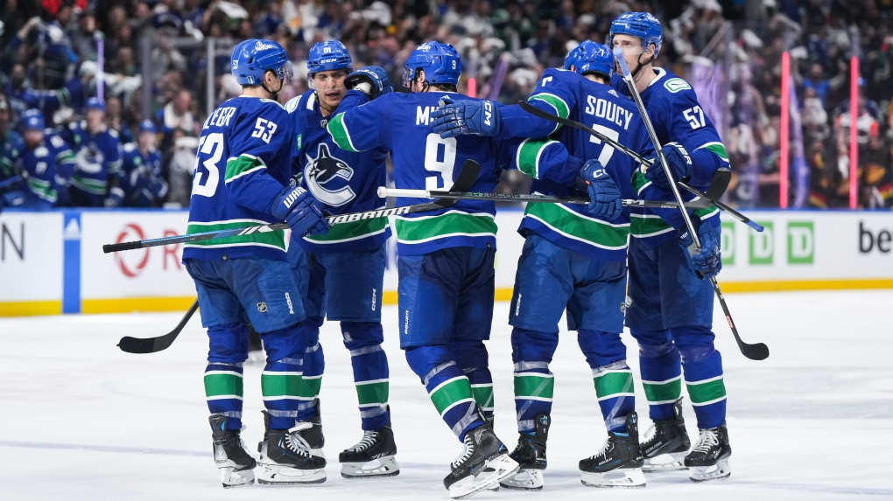
The Canucks solidified their spot in the race for the cup with some wins against strong teams, but also losing and barely scraping by the weaker teams.
Record: 4-3-1
The Canucks finished April and their regular season with 9 points, good enough for 1st in the Pacific, 3rd in the Conference, and 6th in the league.
Key Games
April 2 vs. Las Vegas Golden Knights (Lost 6-3)
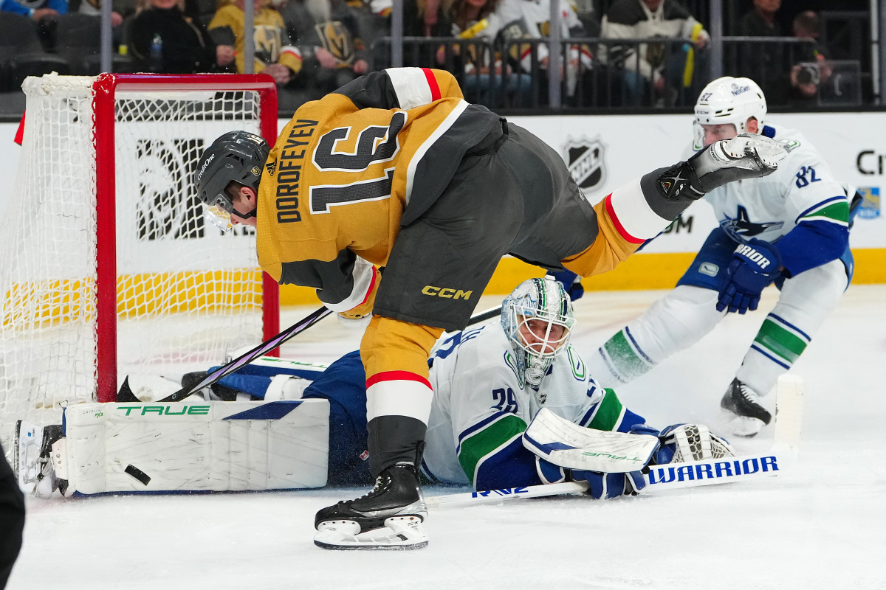
The Canucks showed a lot of their weaknesses, going down 5-1 in the second period, and was unable to make a comeback against the defending cup champions.
Want to read about the 2023/24 playoffs? Visit the History page for more info!
Offensive breakdown
The Canucks scored 279 goals in the 2023/24 season, three more goals than last season. Vancouver also had a 22.6% power play percentage, a slight decrease from last season's 22.71 percentage.
The Canucks finished the regular season with a goal differential of +58, a whopping increase of 80 from last season's -22 differential.
The Canucks had 11 players with at least 10 goals, an increase of two from last year's 9.
Overall, 2023/24's offensive productivity for the Canucks took a slight increase, but it was mostly the defensive factor that strengthened this Canucks side.
Defensive breakdown.
The Canucks only allowed 221 goals this season, 77 goals better than last year, when they let in 298 goals.
Furthermore, Vancouver had a 79.1% penalty kill, a huge 7.5% increase from the league worst 71.6% penalty kill last season.
Several factors for this increase include better goaltending, key defensemen aquisitions, and strategy changes.
Long story short, the Vancouver Canucks greatly improved their defence, which substantially improved their place in the standings.
Awards and honours
Regular season awards
| Player | Award | Date awarded |
|---|---|---|
| Elias Pettersson | NHL Second Star of the Week | Oct 16, 2023 |
| Elias Pettersson | NHL Second Star of the Month | Nov 1, 2023 |
| Quinn Hughes | NHL First Star of the Week | Nov 6, 2023 |
| Quinn Hughes | NHL Third Star of the Month | Dec 1, 2023 |
| Thatcher Demko | NHL Second Star of the Week | Dec 18, 2023 |
| Quinn Hughes | NHL All-Star Game selection | Jan 4, 2024 |
| J.T. Miller | NHL All-Star Game selection | Jan 13, 2024 |
| Elias Pettersson | NHL All-Star Game selection | Jan 13, 2024 |
| Brock Boeser | NHL All-Star Game selection | Jan 13, 2024 |
| Thatcher Demko | NHL All-Star Game selection | Jan 13, 2024 |
| Elias Pettersson | NHL First Star of the Week | Jan 15, 2024 |
| Elias Pettersson | NHL Third Star of the Month | Feb 1, 2024 |
| Thatcher Demko | NHL Third Star of the Week | Mar 11, 2024 |
| Rick Tocchet | Jack Adams Award | May 22, 2024 |